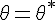
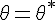

задан, но неизвестен параметр
задан, но неизвестен параметр  , которым определяется этот закон
, которым определяется этот законМетод максимального правдоподобия (ММП) (работает с дискретными величинами и функциями)
ММП - метод максимального правдоподобия точечной оценки неизвестных параметров заданного распределения - сводится к отысканию максимума функции одного или нескольких оцениваемых параметров
Пусть - дискретная случайная величина, которая в результате опытов приняла возможное значение
Допустим что вид закона распределения величины задан, но неизвестен параметр , которым определяется этот закон
Требуется найти его точечную оценку
Обозначим вероятность того, что в результате испытаний величина  примет значение через
примет значение через
Функцией правдоподобия дискретной случайной величины называют функцией аргумента  , которая равна произведению вероятностей
, которая равна произведению вероятностей
Оценкой максимального правдоподобия параметра называют такое его значение, при котором ф-ция правдоподобия достигает своего максимума

 и смотрим чему равен знак при . Если знак минус то
и смотрим чему равен знак при . Если знак минус то  - максимального правдоподобия параметра
- максимального правдоподобия параметра 
случайная величина  (число появлений события в независимых испытаниях) подчинена з-ну распределения Пуассона с неизвестным параметром
(число появлений события в независимых испытаниях) подчинена з-ну распределения Пуассона с неизвестным параметром
 -
-
 -
-